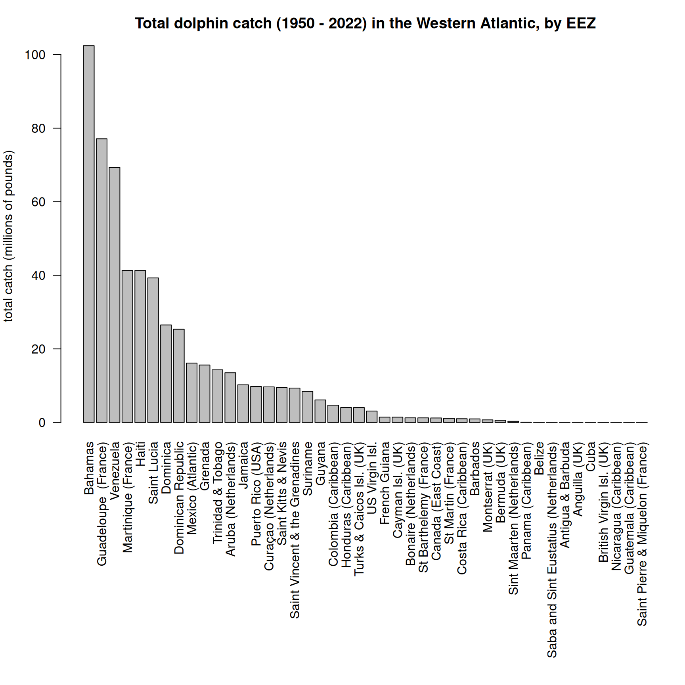
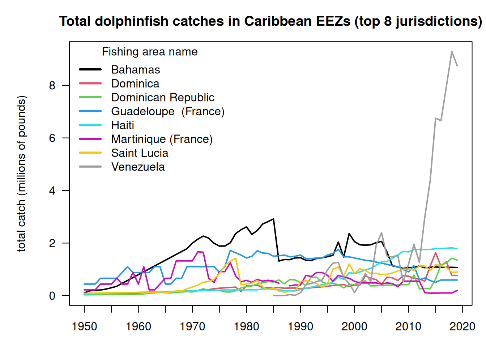
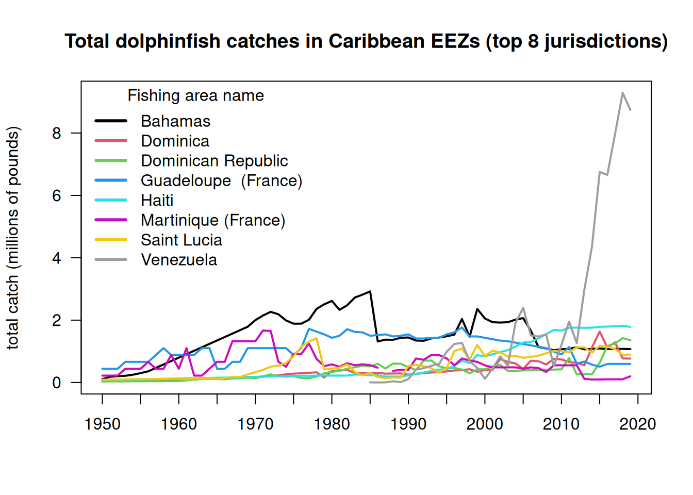
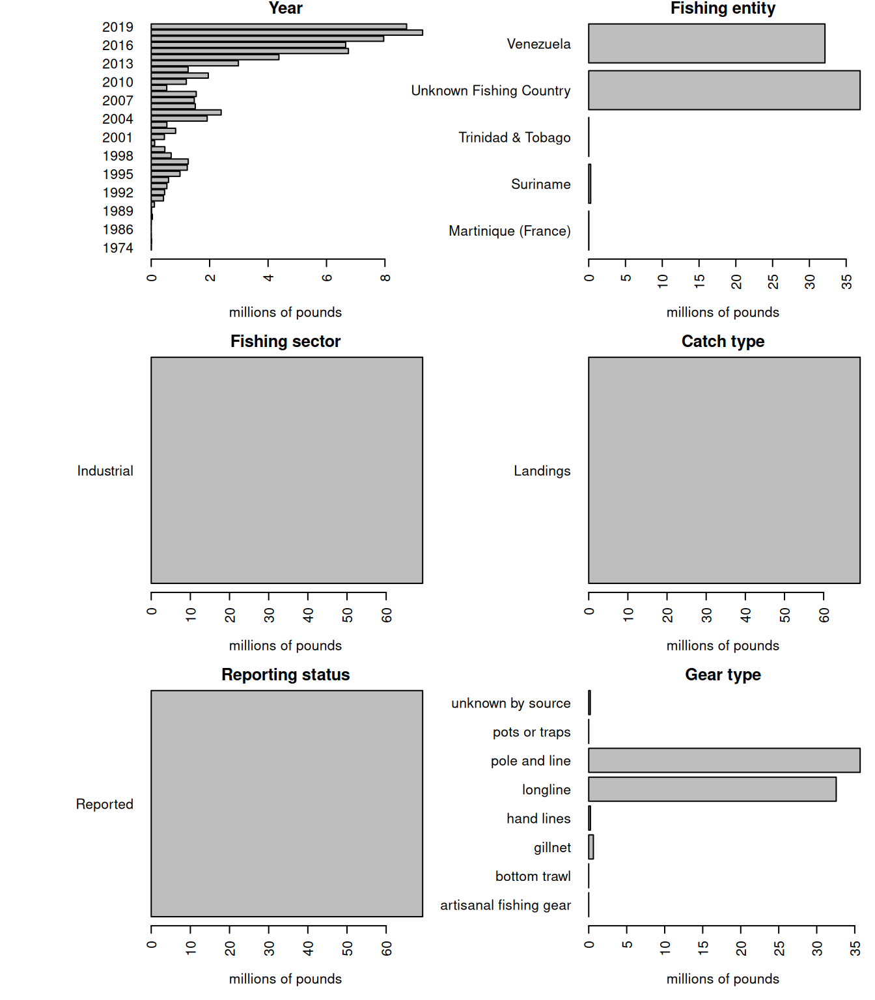
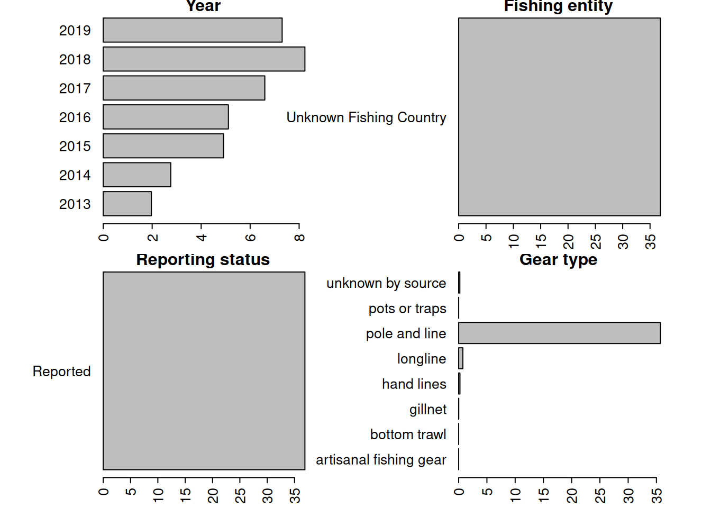
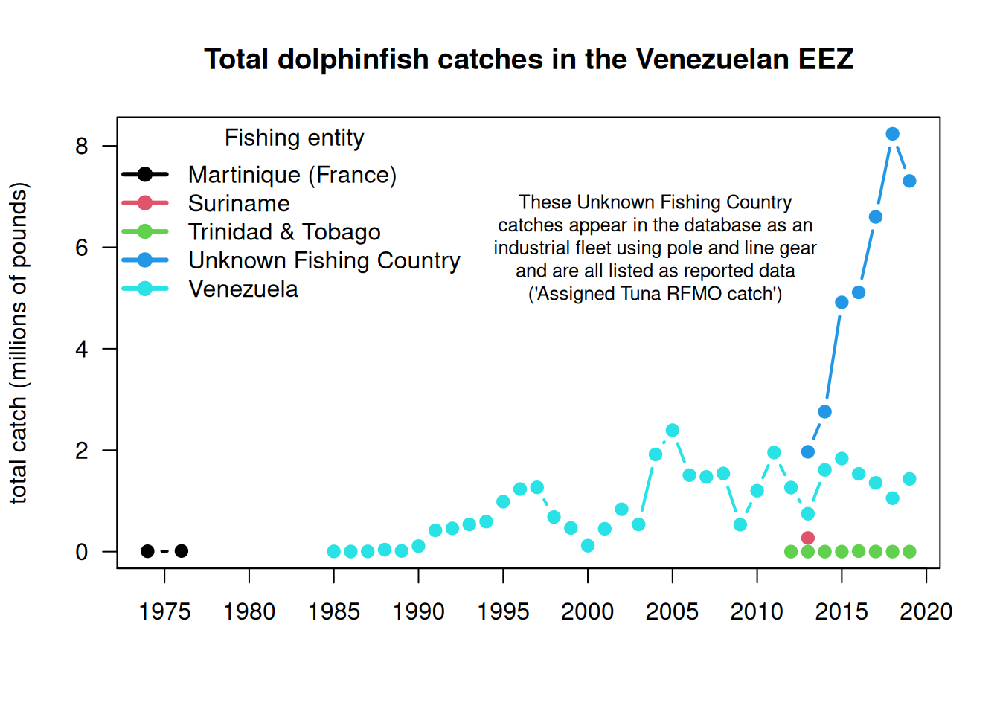

4Analysis of international landings in territorial waters
4.1 Data access and upload
For catches within each country’s exclusive economic zones, data are downloaded download data from the Sea Around Us site(Pauly, Zeller, and Palomares, 2020.). In the Biodiversity by Taxon Tools and Data, we filter by EEZ for All regions, and then filter by Taxon at the Species level for Common dolphinfish (Coryphaena hippurus). After clicking “View graphs” one can access the full data set using the “Download Data” button.
4.2 Read in the landings within excluzive economic zones (EEZs)
Now we read in the landings reported by each country or jurisdiction’s respective EEZ. Because we have extracted dolphin landings for EEZs worldwide, we need to separate out the landings for the Atlantic Ocean basin.
# load librarieslibrary(pals)rm(list =ls())d <-read.csv("data/SAU/SAU Taxa 600006 v50-1.csv", header = T, sep =",") # v. 50.1 - June 2024head(d)
area_name area_type year scientific_name common_name
1 Australia eez 1950 Coryphaena hippurus Common dolphinfish
2 Australia eez 1950 Coryphaena hippurus Common dolphinfish
3 Australia eez 1950 Coryphaena hippurus Common dolphinfish
4 Bahamas eez 1950 Coryphaena hippurus Common dolphinfish
5 Barbados eez 1950 Coryphaena hippurus Common dolphinfish
6 Bermuda (UK) eez 1950 Coryphaena hippurus Common dolphinfish
functional_group commercial_group fishing_entity fishing_sector
1 Large pelagics (>=90 cm) Perch-likes Australia Industrial
2 Large pelagics (>=90 cm) Perch-likes Australia Industrial
3 Large pelagics (>=90 cm) Perch-likes Australia Industrial
4 Large pelagics (>=90 cm) Perch-likes Bahamas Recreational
5 Large pelagics (>=90 cm) Perch-likes Barbados Recreational
6 Large pelagics (>=90 cm) Perch-likes Bermuda (UK) Artisanal
catch_type reporting_status gear_type
1 Landings Reported longline
2 Landings Reported longline
3 Landings Reported longline
4 Landings Unreported recreational fishing gear
5 Landings Unreported recreational fishing gear
6 Landings Reported small scale lines
end_use_type tonnes landed_value
1 Fishmeal and fish oil 0.003373202 3.438170e-05
2 Direct human consumption 6.739657104 1.040254e+04
3 Other 0.003373202 3.438170e-05
4 Direct human consumption 48.665105143 8.262728e+00
5 Direct human consumption 0.009158559 4.846886e-04
6 Direct human consumption 1.511085514 3.199403e+03
We look at the characteristics of the landings within EEZs. These are largely industrial and artisanal in nature. Landings are the majority of the catch but discards are also present. There are more unreported landings than reported landings and a variety of gear types are used.
# look at characteristics of data par(mfrow =c(2, 2), mar =c(12, 7, 3, 1), mex =0.5, mgp =c(5, 1, 0))barplot(tapply(d$lbs, d$fishing_sector, sum, na.rm = T)/10^6, las =2, ylab ="millions of pounds", main ="Fishing sector")barplot(tapply(d$lbs, d$catch_type, sum, na.rm = T)/10^6, las =2, ylab ="millions of pounds", main ="Catch type")barplot(tapply(d$lbs, d$reporting_status, sum, na.rm = T)/10^6, las =2, ylab ="millions of pounds", main ="Reporting status")barplot(tapply(d$lbs, d$gear_type, sum, na.rm = T)/10^6, las =2, ylab ="millions of pounds", main ="Gear type")
Now we have to manually assign the different EEZs to respective areas. We separate the geographical areas within the Atlantic Ocean (North and South) and lump all other EEZs into “other oceans.” This latter category is largely the Pacific Ocean and to a lesser extent the Indian Ocean. We remove the high seas catch from this database as it is not ocean-specific and we have extracted the ocean-specific high seas catch previously.
# remove the high seas catch from this databased <- d[which(d$area_type !="high_seas"), ] d$fishing_entity <-as.factor(d$fishing_entity)d$fishing_entity <-droplevels(d$fishing_entity)table(d$area_type) # this should be all "eez"
eez
63056
# Western Central Atlantic EEZsWCA <-c("Bahamas", "Barbados", "Cayman Isl. (UK)", "Dominica", "Dominican Republic", "Grenada", "Aruba (Netherlands)", "Haiti", "Guadeloupe (France)", "Jamaica", "Martinique (France)","Montserrat (UK)", "Nicaragua (Caribbean)", "Puerto Rico (USA)", "Saint Kitts & Nevis", "Saint Lucia", "Saint Vincent & the Grenadines", "Trinidad & Tobago", "US Virgin Isl.", "St Barthelemy (France)", "St Martin (France)", "Curaçao (Netherlands)", "Bonaire (Netherlands)","Saba and Sint Eustatius (Netherlands)", "Sint Maarten (Netherlands)", "Honduras (Caribbean)","Colombia (Caribbean)", "Mexico (Atlantic)", "Turks & Caicos Isl. (UK)", "Guyana", "Venezuela","Antigua & Barbuda", "Belize", "British Virgin Isl. (UK)", "French Guiana", "Cuba", "Anguilla (UK)", "Suriname", "Costa Rica (Caribbean)", "Guatemala (Caribbean)", "Panama (Caribbean)", "Bermuda (UK)", "Curaçao (Netherlands)") # BrazilBra <-c("Brazil (mainland)", "Fernando de Noronha (Brazil)", "St Paul and St. Peter Archipelago (Brazil)")# CanadaCan <-c("Canada (East Coast)", "Saint Pierre & Miquelon (France)")# United StatesUSA <-c("USA (East Coast)", "USA (Gulf of Mexico)")# Northeast Atlantic EEZsNEA <-c("Canary Isl. (Spain)", "Spain (mainland; Med and Gulf of Cadiz)", "Spain (Northwest)", "Spain (mainland, Med and Gulf of Cadiz)", "France (Atlantic Coast)", "Portugal (mainland)", "Azores Isl. (Portugal)")# Eastern Central Atlantic EEZsECA <-c("Madeira Isl. (Portugal)", "Cape Verde", "Equatorial Guinea", "Benin", "Sao Tome & Principe ", "Sao Tome & Principe", "Morocco (Central)", "Ghana", "Côte d'Ivoire", "Côte d'Ivoire", "Guinea", "Liberia", "Sierra Leone", "Nigeria", "Togo", "Guinea-Bissau", "Senegal", "Cameroon", "Gambia", "Mauritania", "Morocco (South)", "Gabon", "Congo; R. of", "Congo, R. of", "Congo (ex-Zaire)")# Southeastern Atlantic EEZsSEA <-c("Angola", "Namibia", "South Africa (Atlantic and Cape)", "Ascension Isl. (UK)", "Saint Helena (UK)", "Tristan da Cunha Isl. (UK)")# Southwest Atlantic EEZsSWA <-c("Trindade & Martim Vaz Isl. (Brazil)", "Uruguay")# Mediterranean EEZsMed <-c("Italy (mainland)", "Libya", "Malta", "Syria", "Sicily (Italy)","Sardinia (Italy)", "Balearic Islands (Spain)", "Cyprus (North)", "Cyprus (South)", "Gaza Strip", "Greece (without Crete)", "Crete (Greece)", "Lebanon", "Turkey (Mediterranean Sea)", "Egypt (Mediterranean)", "Israel (Mediterranean)", "Tunisia", "Algeria", "Albania", "Croatia", "Montenegro", "Morocco (Mediterranean)", "France (Mediterranean)", "Corsica (France)")# add variable to specify regiond$reg <-"other oceans"d$reg[which(d$area_name %in% WCA)] <-"Western Central Atlantic EEZs"d$reg[which(d$area_name %in% Bra)] <-"Brazil EEZ"d$reg[which(d$area_name %in% Can)] <-"Canadian EEZ"d$reg[which(d$area_name %in% USA)] <-"United States EEZ"d$reg[which(d$area_name %in% NEA)] <-"Northeast Atlantic EEZs"d$reg[which(d$area_name %in% ECA)] <-"Eastern Central Atlantic EEZs"d$reg[which(d$area_name %in% SEA)] <-"Southeast Atlantic EEZs"d$reg[which(d$area_name %in% SWA)] <-"Southwest Atlantic EEZs"d$reg[which(d$area_name %in% Med)] <-"Mediterranean Sea EEZs"
Now we will check that we have classified the regions correctly.
# check region designation othlis <-unique(d$area_name[which(d$reg =="other oceans")])print("EEZs of all other oceans: ")
Now we will summarize the catch by region by grouping the catch across the EEZs by region and plot the results. The U.S. landings should be very close to what is reported in Section 2 because the majority of U.S. catch is reported through the various data collection systems that are compiled within Sea Around Us.
# summarize EEZ catch by regiontab <-tapply(d$lbs, list(d$year, d$reg), sum, na.rm = T)#head(tab)tab2 <-t(tab)tab3 <- tab2[order(rowSums(tab2, na.rm = T), decreasing = T), ]tab_glob <-t(tab3)#head(tab_glob)yrs <-as.numeric(rownames(tab))par(mar =c(5, 4, 4, 3), mgp =c(3, 1, 0))matplot(yrs, tab_glob/10^6, las =2, type ="l", lty =c(3, rep(1, 9)), lwd =3, col =glasbey(ncol(tab_glob)), xlab ="", ylab ="total catch (millions of pounds)", main ="Global dolphin catches within EEZs (commercial + recreational)")legend("topleft", colnames(tab_glob), col =glasbey(ncol(tab_glob)), lty =c(3, rep(1, 9)), lwd =3, bty ="n")

We can see that the EEZ catches globally are dominated by areas outside of the Atlantic (“other oceans”) so we will replot the data after moving this category. Here we can see that most of the catches historically were coming from the Mediterranean Sea, though these catches have been declining drastially since the 1970s. Catches in the United States have showed an opposite pattern, with low historical catches that increased in the 1980s (largely due to the introduction of recreational monitoring). Catches in the Western Central EEZs have increased gradually over time.
We save these data for later use, and move on to analyzing only the Western Central and Northwest Atlantic jurisdictions.
# remove other oceans#head(tab_glob)tab <- tab_glob[, -which(colnames(tab_glob) =="other oceans")]#head(tab)matplot(yrs, tab/10^6, las =2, type ="b", pch =19, cex =0.5, lty =1, col =glasbey(ncol(tab)+1)[-1], xlab ="", ylab ="total catch (millions of pounds)", axes = F,main ="Dolphin catches from the Atlantic EEZs (commercial + recreational)")matplot(yrs, tab/10^6, las =2, type ="l", pch =19, lty =1, lwd =2, add = T, col =glasbey(ncol(tab)+1)[-1])axis(1, at = yrs[seq(1, 90, 2)], las =2); axis(2); box()legend(1952, 25, colnames(tab), col =glasbey(ncol(tab)+1)[-1], pch =19, lty =1, lwd =2, bty ="n", cex =0.6)

write.csv(data.frame(tab), file ="data/outputs/intl_catches_allAtlantic.csv", row.names = T)dwest <- d[which(d$reg =="Canadian EEZ"| d$reg =="Western Central Atlantic EEZs"), ]save(dwest, file ="data/outputs/SAU_EEZs_WCA.RData")tab <-tapply(dwest$lbs, list(dwest$year, dwest$area_name), sum, na.rm = T)sort(colSums(tab, na.rm = T), decreasing = T)[1:15] # eight countries are responsible for vast majority of catch with total landings across all years exceeding 2M pounds
lis <-names(sort(colSums(tab, na.rm = T), decreasing = T)[1:8])tab1 <- tab[, colnames(tab) %in% lis]matplot(rownames(tab1), tab1/10^6, las =2, type ="l", lty =1, lwd =2, pch =19, col =1:8,xlab ="", ylab ="total catch (millions of pounds)", axes = F, main ="Total dolphinfish catches in Caribbean EEZs (top 8 jurisdictions)")axis(1, at =seq(1950, 2020, 5)); axis(2, las =2); box()legend("topleft", colnames(tab1), col =1:8, lty =1, lwd =3, bty ="n", title ="Fishing area name")

Note the rapid eight-fold increase in catches listed within the Venezuelan EEZ which occurs from 2013 - 2019. This increase is responsible for a rapid increase in estimated international catches within the Western Atlantic seen in the prior plot.
4.5 Look at Venezuela catches in detail
The figures above indicate that the database shows a rapid increase in international catches within the Western Atlantic, driven by a sudden increase in catches reported within Sea Around Us database within the Venezuelan EEZ. We investigate these catches in detai, as it seems odd that a relatively small fleet from a single country would be able to ramp up effort so rapidly. Data can be downloaded on a country-specific basis, the catches by taxon in the waters of Venezuela are accessed here.
rm(list =ls()) # clear the workspace# download the data for waters of Venezuelaven <-read.csv("data/SAU/SAU EEZ 862 v50-1.csv") # subset dolphinfish from the datav <- ven[which(ven$common_name =="Common dolphinfish"), ]#apply(v[1:13], 2, table)#convert to poundsv$pounds <- v$tonnes *1000*2.20462# look at the characteristics of the datapar(mar =c(5, 10, 1, 1), mfrow =c(3, 2), mex =0.5)#barplot(tapply(v$pounds/10^6, v$area_name, sum, na.rm = T), las = 2, xlab = "millions of pounds", main = "Area name", horiz = T)#barplot(tapply(v$pounds/10^6, v$area_type, sum, na.rm = T), las = 2, xlab = "millions of pounds", main = "Area type", horiz = T)barplot(tapply(v$pounds/10^6, v$year, sum, na.rm = T), las =2, xlab ="millions of pounds", main ="Year", horiz = T)barplot(tapply(v$pounds/10^6, v$fishing_entity, sum, na.rm = T), las =2, xlab ="millions of pounds", main ="Fishing entity", horiz = T)barplot(tapply(v$pounds/10^6, v$fishing_sector, sum, na.rm = T), las =2, xlab ="millions of pounds", main ="Fishing sector", horiz = T)barplot(tapply(v$pounds/10^6, v$catch_type, sum, na.rm = T), las =2, xlab ="millions of pounds", main ="Catch type", horiz = T)barplot(tapply(v$pounds/10^6, v$reporting_status, sum, na.rm = T), las =2, xlab ="millions of pounds", main ="Reporting status", horiz = T)barplot(tapply(v$pounds/10^6, v$gear_type, sum, na.rm = T), las =2, xlab ="millions of pounds", main ="Gear type", horiz = T)

Note that a large portion of the catch in the database is listed as coming from an “Unknown Fishing Country.” We extract these catches and further investigate the characteristics.
# extract the Unknown Fishing Country catchv1 <- v[which(v$fishing_entity =="Unknown Fishing Country"), ]apply(v1[1:15], 2, table)
$area_name
Venezuela
39
$area_type
eez
39
$data_layer
Assigned Tuna RFMO catch
39
$uncertainty_score
< table of extent 0 >
$year
2013 2014 2015 2016 2017 2018 2019
5 5 5 6 7 5 6
$scientific_name
Coryphaena hippurus
39
$common_name
Common dolphinfish
39
$functional_group
Large pelagics (>=90 cm)
39
$commercial_group
Perch-likes
39
$fishing_entity
Unknown Fishing Country
39
$fishing_sector
Industrial
39
$catch_type
Landings
39
$reporting_status
Reported
39
$gear_type
artisanal fishing gear bottom trawl gillnet
1 5 7
hand lines longline pole and line
3 4 7
pots or traps unknown by source
5 7
$end_use_type
Direct human consumption
39
# look at characteristicspar(mar =c(3, 10, 1, 5), mfrow =c(2, 2), mex =0.6)barplot(tapply(v1$pounds/10^6, v1$year, sum, na.rm = T), las =2, xlab ="millions of pounds", main ="Year", horiz = T)barplot(tapply(v1$pounds/10^6, v1$fishing_entity, sum, na.rm = T), las =2, xlab ="millions of pounds", main ="Fishing entity", horiz = T)barplot(tapply(v1$pounds/10^6, v1$reporting_status, sum, na.rm = T), las =2, xlab ="millions of pounds", main ="Reporting status", horiz = T)barplot(tapply(v1$pounds/10^6, v1$gear_type, sum, na.rm = T), las =2, xlab ="millions of pounds", main ="Gear type", horiz = T)

Here is another look at the catches within the venezuelan EEZ, separated by fishing entity.
Martinique (France) Suriname Trinidad & Tobago Unknown Fishing Country
1974 7320.429 NA NA NA
1976 12814.641 NA NA NA
1985 NA NA NA NA
1986 NA NA NA NA
1987 NA NA NA NA
1988 NA NA NA NA
Venezuela
1974 NA
1976 NA
1985 4699.563
1986 2229.484
1987 4585.610
1988 39960.149
matplot(rownames(tab), tab/10^6, las =2, type ="b", lty =1, lwd =2, pch =19, col =1:5,xlab ="", ylab ="total catch (millions of pounds)", axes = F, main ="Total dolphinfish catches in the Venezuelan EEZ")axis(1, at =seq(1950, 2020, 5)); axis(2, las =2); box()legend("topleft", colnames(tab), col =1:5, pch =19, lty =1, lwd =3, bty ="n", title ="Fishing entity")text(2004, 6, cex =0.8,"These Unknown Fishing Country\ncatches appear in the database as an\nindustrial fleet using pole and line gear\nand are all listed as reported data\n('Assigned Tuna RFMO catch')")

The very substantial increase in international Western Atlantic dolphin catches can be attributed solely to this Unknown Fishing Country catches which appear in the database beginning in 2013. The documentation of the catch reconstruction can be found in the Sea Around Us documentation files (see Mendoza et al. 2015). We spoke to Jeremy Mendoza and other experts who were involved in the reconstruction of domestic catches in Venezuela, and they noted that the “Assigned tuna RFMO catch” actually emerge from spatially reshuffled landing reports to ICCAT, according to the methods of Coulter et al. (2020). In this work, the Sea Around Us team developed a global spatial reallocation of landings of tunas and associated species that were reported to ICCAT. In short, this work uses the fraction of reported spatially disaggregated data to reallocate all data reported to ICCAT. This step is necessary because there are not many countries that report spatial data to ICCAT in the region, and this method may lead to a significant reallocation of landings from the Caribbean to the Venezuelan EEZ, where the local pole and line fishery is significant (J. Mendoza, personal communication). Thus, it is likely that landings from other EEZs, that were included in the reconstructed catch data layer, could have been reassigned to the Venezuelan EEZ.
Because there may be some overlap between the reconstructed data used in the national EEZ estimates, and the ICCAT reporting that was reassigned, there could potentially be a “double counting” of these catch estimates in the Sea Around Us database. We verified with Sea Around Us database managers that their method led to an error resulting in an overestimate of the catch, and they advised us to remove these Unknown Fishing Country catches as they are difficult to trace back to the data source.
4.6 Compile catch in CAR and NED jurisdictional waters by discards and reporting type
Now that we have separated the EEZ catch by region, we will summarize it according to the areas used in the dolphin management strategy evaluation operating model. We will separate the catch by discards versus landings and reported versus unreported data so that we can use these data in various sensitivity analyses.
rm(list =ls()) # clear the workspace# load dataload("data/outputs/SAU_EEZs_WCA.RData") # SAU EEZ data for NED and NCA saved from earlierload("data/outputs/erroneous_catch_to_be_removed.RData") # double-counted catch values to be removedd <- dwest# summarize the catch by area, discards/landings and reported/unreportedtapply(d$lbs, list(d$catch_type, d$reporting_status, d$reg), sum, na.rm = T)
, , Canadian EEZ
Reported Unreported
Discards NA NA
Landings 1220146 NA
, , Western Central Atlantic EEZs
Reported Unreported
Discards NA 2179444
Landings 393279187 176215080
The catch from the Canadian EEZs is 100% landings, with no unreported data and no discards. In the WCA there are no reported discards, only unreported discards. Thus, we only need to separate out unreported discards and landings for the WCA.
# summarize the catch by year, area, discards/landings and reported/unreportedd$year <-factor(d$year, levels =1950:2019)dc <- d[which(d$reg =="Canadian EEZ"), ]dw <- d[which(d$reg =="Western Central Atlantic EEZs"), ]# verify proper identification of the erroneous Venezuelan Unknown Fishing Country catches bad <- dw[which(dw$area_name =="Venezuela"& dw$fishing_entity =="Unknown Fishing Country"), ]#dim(bad)bad_totals <-tapply(bad$lbs, bad$year, sum, na.rm = T)cbind(tail(bad_totals, 10), tail(removecatch, 10)) # the numbers match exactly
[,1] [,2]
2010 NA NA
2011 NA NA
2012 NA NA
2013 1968566 1968566
2014 2759603 2759603
2015 4915156 4915156
2016 5112450 5112450
2017 6599737 6599737
2018 8236857 8236857
2019 7307245 7307245
# now remove those bad catches from the database prior to summarizing#dim(dw)dw <- dw[-which(dw$area_name =="Venezuela"& dw$fishing_entity =="Unknown Fishing Country"), ]#dim(dw)CAN <-tapply(dc$lbs, list(dc$year, dc$catch_type, dc$reporting_status), sum, na.rm = T)tail(CAN)
Note that the Caribbean unreported discards in the database are negligible (< 1%) and we exclude them from further analysis.
4.7 Distribute the territorial international catches across quarters of the year
The international landings are only reported as annual catches and do not have any month or season associated with them. However, the MSE operating model requires seasonal catches. Lacking other information on the seasonality of these fleets, we will assume that the fleet distribution of the U.S. pelagic longline is representative of the seasonality of the jurisdictional fleets. Now we parse the annual catches according to the seasonality of the U.S. fleet.
The pelagic longline logbook data is only available going back to 1997, but there are Caribbean catches extending back to the 1950s. To interpolate the seasonality for 1986 - 1996, we take the average seasonality of the oldest 10 years of logbook data (1997 - 2006) and use those averages for the unknown years.
At the time of analysis, the SAU database only contained catches to 2019, so we interpolated the 2019 values to cover years 2020 - 2022.
#par(mar = c(5, 10, 3, 1))#barplot(tapply(dw$lbs, dw$gear_type, sum, na.rm = T), horiz = T, las = 2)#barplot(tapply(dc$lbs, dc$gear_type, sum, na.rm = T), horiz = T, las = 2)# read in the percentage of the catch by area and year-quarter combinations from the U.S. PLLload("data/outputs/per_PLLcatch_by_area_yearquarter.RData") percatch[1, 1, ] # matrix 2 == Caribbean, matrix 7 == NED (Atlantic Northwest)
NCA CAR FLK NCFL NNC VBM
0.755794702 0.547263682 0.049739219 0.001825132 0.000000000 0.000000000
NED
0.000000000
CAN <- CAN[which(rownames(CAN) >=1997)] # PLL data are only available from 1997 on CAN <-c(CAN, CAN[length(CAN)], CAN[length(CAN)], CAN[length(CAN)]) # interpolate 2019 catches for 2020-2022CANqrt <- percatch[, , 7] # create matrix for final catch datafor (i in1:ncol(percatch)) { CANqrt[, i] <- percatch[, i, 7] * CAN[i] }percatch_car <- percatch[, , 2]int <-rowMeans(percatch_car[, 1:10])percatch_car <-cbind(matrix(rep(int, length(1986:1996)), nrow =4), percatch_car)colnames(percatch_car) <-1986:2022# full data frame for Caribbean seasonality 1986 - 2022CAR <- CAR[which(rownames(CAR) >=1986), ] # only need Caribbean data from 1986 on CAR <-rbind(CAR, CAR[nrow(CAR), ], CAR[nrow(CAR), ], CAR[nrow(CAR), ]) # interpolate 2019 catches for 2020-2022#dim(CAR)#dim(percatch_car)CARrep <- percatch_car # create matrices for final catch dataCARunr <- percatch_carfor (i in1:ncol(percatch_car)) { CARrep[, i] <- percatch_car[, i] * CAR[i, 1] CARunr[, i] <- percatch_car[, i] * CAR[i, 3]}# ensure sums are equal after parsingsum(CARrep); sum(CAR$landings)
[1] 286220280
[1] 286220280
sum(CARunr); sum(CAR$unreported)
[1] 112754888
[1] 112754888
sum(CAN, na.rm = T); sum(CANqrt, na.rm = T)
[1] 1328482
[1] 1328482
The Canada jurisdictional data need to be combined with the NED high seas data calculated in the previous section, because both of these are a component of the international catches in the NED area.